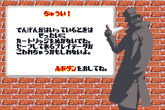

Okumanchouja Game - Nottori Daisakusen! (Japan)
Stateless / Passcode 📺 Joybus 💾 MultiBoot
Cartridge Identity
- Game Code
AOKJ(FamilyAOK)- Header Title
OKUMAN 01- Maker / Revision
A7/ rev0- ROM Size
- 4.0 MiB (4,194,304 B)
- Save Media
None / Unknown- SHA-256
e76400245d2b49095f2256f0bd68a51878d16b3563913f326725982c9d6899eb- Engine / SDK Group
comm-001(196 families)
Screenshots

Link Cable & Multiplayer Communications
This title contains detected communication capabilities: 📺 Joybus 💾 MultiBoot.
Detailed protocol specifications, SIO registers, Joybus commands, and MultiBoot sequences are documented in the Link & Multiplayer Reference.
- GameCube Joybus
- Register literal
REG_JOY_RECV(0x04000150) at offset0x13ab9c - Single-Cart MultiBoot
- Single-Cartridge MultiBoot (Download Play) client/server handler · Thumb SWI 0x25 (
0xDF25):0x0dace6,0x12fcae,0x22c9b8,0x2bc4ea
Cartridge Storage Architecture: Stateless / Passcode
Zero non-volatile battery hardware: This cartridge PCB contains ROM only (no SRAM, Flash, or EEPROM chips). Progression is preserved via on-screen passcodes or session-only gameplay. No
.sav file is generated or required.
ROM Assets, Compression & Audio
- BIOS Compression
- LZ77 (
0x10): 1,483 streams · RLE (0x30): 0 streams - ROM Pointer Tables
- 50 tables (20 pointing to validated compressed streams)
- SDK Backup Tags
SRAM_V112
Asset Map (formatkit.asset-map.v1)
Download AOKJ-r0-e76400245d2b4909.asset-map.json.gz (30,176 B (29.5 KiB)) Verified PASS · 89.00% coverage
| Metric | Bytes / Value | Entries |
|---|---|---|
| Identified | 3,733,136 B (3.56 MiB) (89.00%) | 274 |
| Mapped | 0 B (0.00%) | 0 |
| Opaque | 0 B (0.00%) | 0 |
| Unknown | 461,168 B (450.4 KiB) (11.00%) | 264 |
| Total ROM Size | 4,194,304 B (4.00 MiB) | 538 |
| Coverage % | 89.00% | — |
| Entries w/ Code Refs | 280 / 538 (52.04%) | — |
Top Identified Formats: audio.m4a-wavedata (1 · 3,722,176 B (3.55 MiB)) · gfx.gba-palette (271 · 10,112 B (9.9 KiB)) · audio.m4a-song-table (1 · 656 B) · gba.rom-header (1 · 192 B)
Largest unknown Extents (Headerless / Custom Asset Candidates)
| Offset | Size | Shannon Entropy | Code Refs |
|---|---|---|---|
0x000147B8 | 42,564 B (41.6 KiB) | 6.617 bits/B | 0 |
0x000588E8 | 33,416 B (32.6 KiB) | 5.209 bits/B | 0 |
0x0005011C | 28,936 B (28.3 KiB) | 1.648 bits/B | 0 |
0x00033B5C | 23,656 B (23.1 KiB) | 6.640 bits/B | 0 |
0x00026770 | 22,340 B (21.8 KiB) | 6.650 bits/B | 0 |
gzip -dk AOKJ-r0-e76400245d2b4909.asset-map.json.gz && gbakit map verify rom.gba AOKJ-r0-e76400245d2b4909.asset-map.json
gbakit assets export rom.gba --asset-map AOKJ-r0-e76400245d2b4909.asset-map.json -o out/Text, Fonts & Scene Data
- Primary Text Encoding
- LZ77-compressed ASCII (
200Shift-JIS runs ·1LZ77 ASCII blocks) - Font & VWF Indicators
- VWF Width Table 1bpp Font · BIOS SWIs: BitUnPack
0x10:17· LZ770x11/12:17· Huffman0x13:13· RLE0x14/15:14 - Scene & Packaging
26ROM pointer tables (≥32 entries,3≥200) ·0relativeu32TOCs ·125OAM metasprite hits
Hardware MMIO Subsystems
ppu_display0x8018cf8